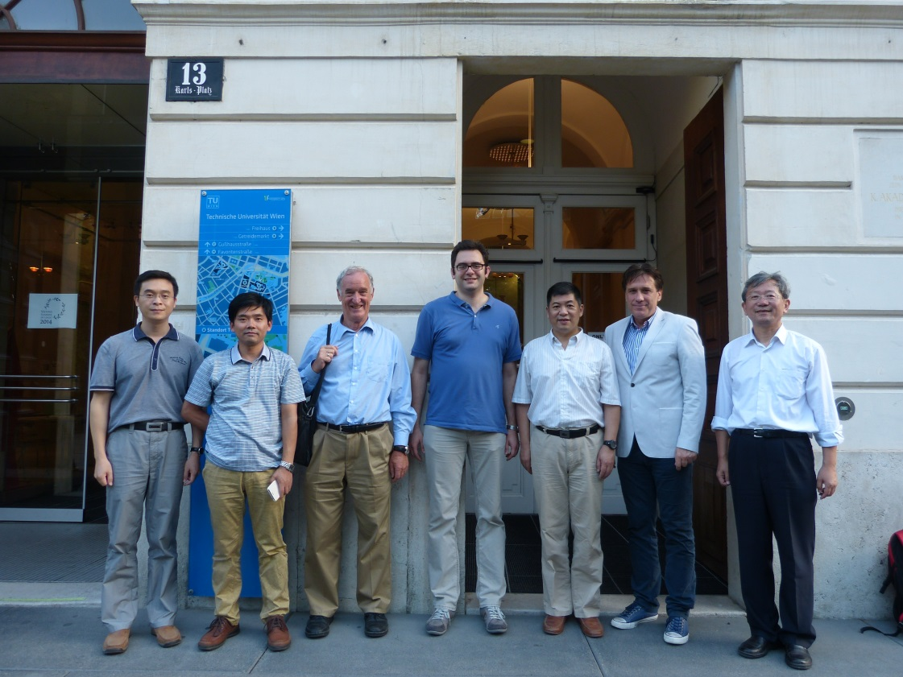
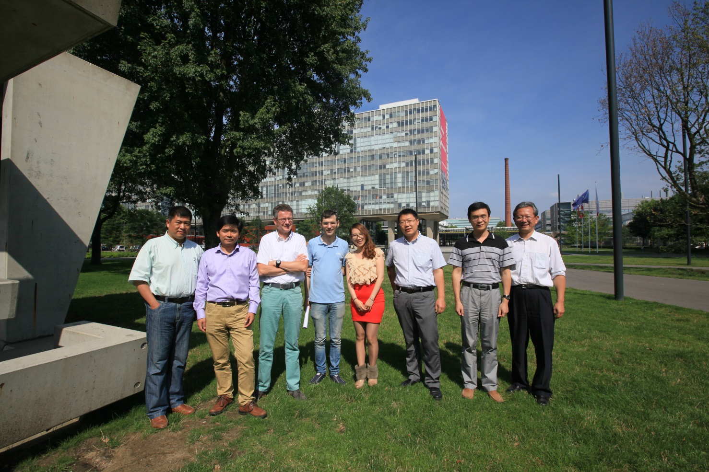
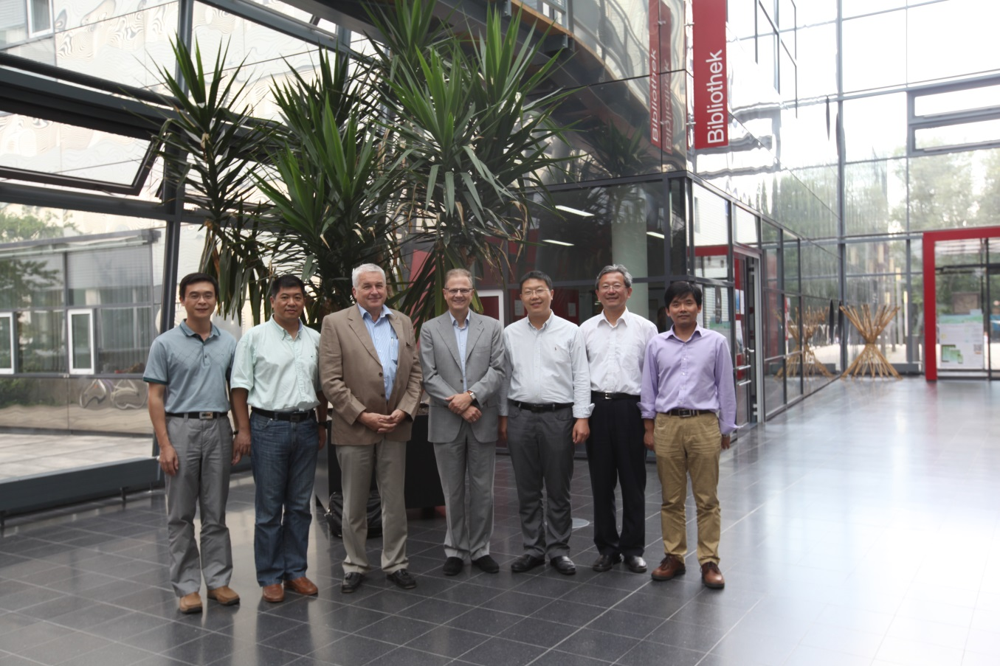

2014年7月15日至7月29日，计算机学院派团出访德国、奥地利、荷兰和卢森堡四国，访问了慕尼黑工业大学（TUM）、维也纳工业大学（TUW）、 埃因霍温工业大学（TU/e）和卢森堡大学，并围绕安全关键系统和软件技术与上述大学进行学术与教学交流，签署一系列合作备忘录。
计算机学院在航空科学与技术国家实验室（筹）建设中，始终以空天信融合为国家重大需求落实点，以面向航空的安全关键计算系统为目标， 承担“高可信航空分布式计算”功能实验室的规划筹建工作，并逐步积累形成“安全关键计算系统”优势方向，并与航空计算技术研究所、 北京神舟航天软件等航空航天企业建立了联合实验室/合作协议等。安全关键系统是指系统的失效或故障往往引起重大的生命、财产损失的系统，如航空、航天、医疗、电网、交通运输系统等。
欧盟在安全关键系统方面已进行了长期的投入，在研究水平、产品研制与应用、咨询认证等各方面处在全球领先地位。此次出访的4个单位均是欧洲安全关键系统领域知名的研究机构。 维也纳工业大学计算机工程研究所的Hermann Kopetz教授是实时系统领域的世界知名学者、时间触发架构TTA技术的发明者，该技术已在航空、航天和汽车等领域安全关键系统中得到广泛应用。 慕尼黑工业大学计算机学院的Manfred Broy教授是欧洲科学院和德国科学院的会员、软件与系统工程领域（包括系统建模，规格说明技术，开发方法与验证等）世界知名学者。 荷兰埃因霍温工业大学计算机系因Edsger Dijkstra教授(1972年的图灵奖获得者)而闻名，Mark van den Brand教授是软件工程领域的国际知名学者。 卢森堡大学安全可靠与可信交叉研究中心(SnT)的副主任Lionel Briand教授是IEEE Fellow，软件验证领域的国际知名专家。
此次出访与上述知名机构均签署了合作备忘录，拟在安全关键实时系统、形式化方法、CPS、智慧城市、实时操作系统、信息安全等领域开展实质性的学术合作， 并计划联合申报欧盟Horizon2020计划、中国NSFC国际合作项目等，同时就专著翻译引进、优秀课程引进、教师/学生互访等达成了一系列意向。此次出访， 进一步扩大了北航及计算机学院在欧洲大学的影响力，扩大了北航与欧洲著名大学的科技合作渠道，促进了计算机学院与欧洲著名大学在“安全关键计算系统”方向的合作交流。